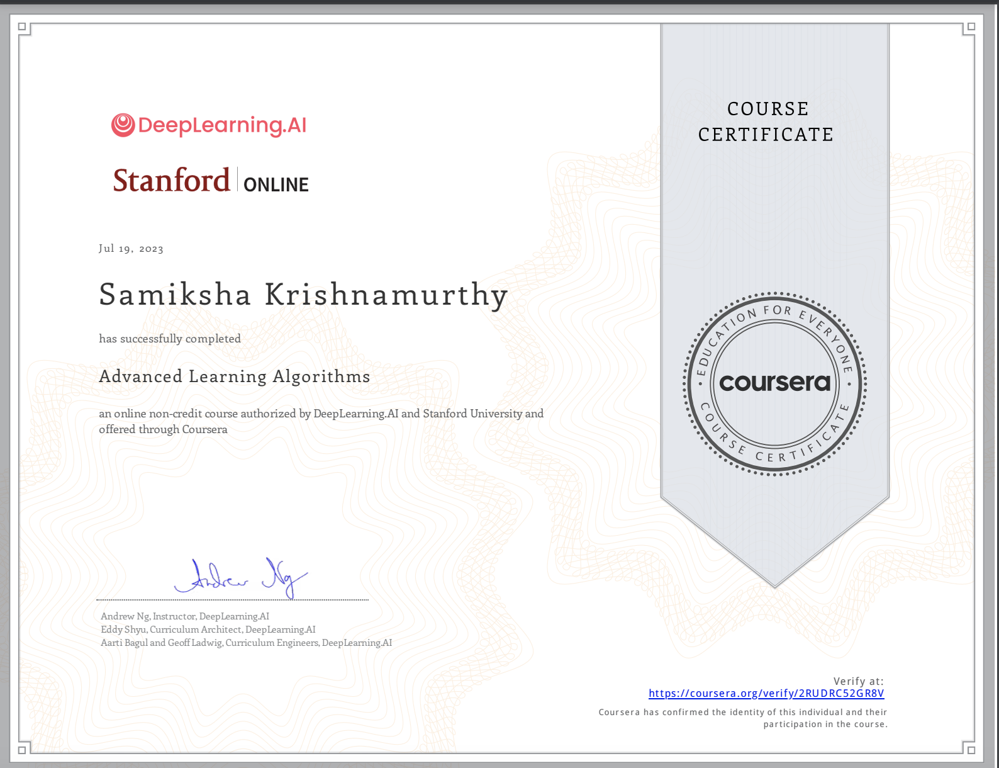
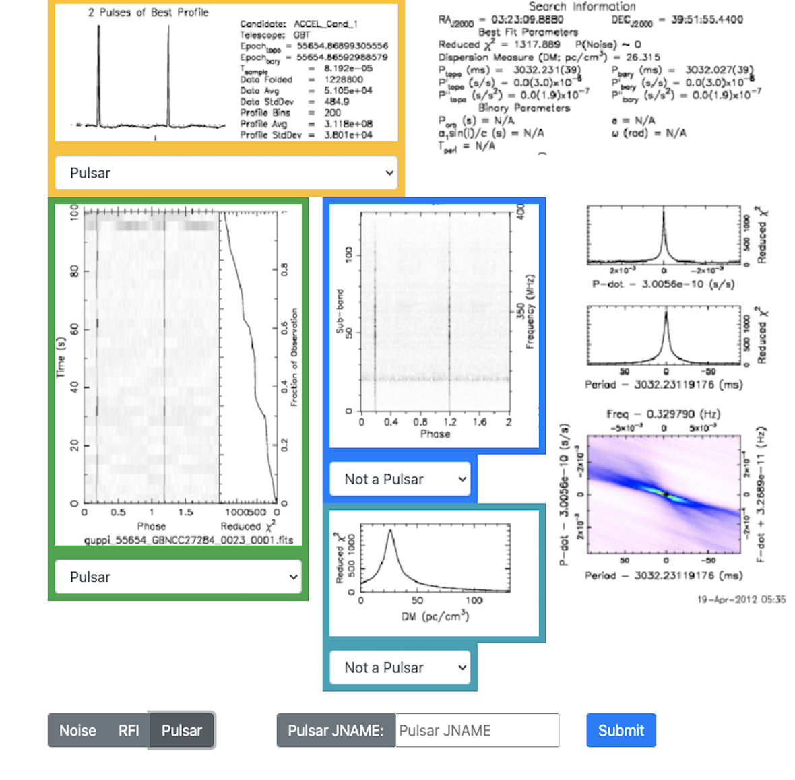
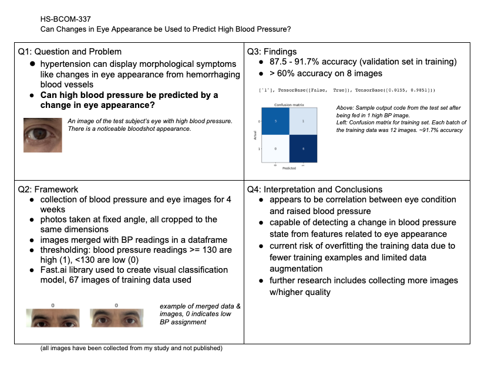
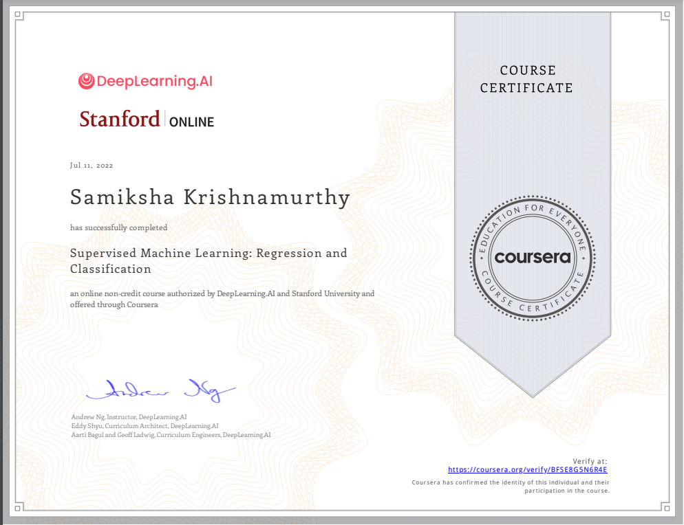

July 2023 - Advanced Algorithms Certification & Pulsar Detection Certification
This summer, I completed the second part of the Deep Learning Specialization, Advanced Learning Algorithms. In this part of the course, I learned about neural networks, decision trees, and the ethics of AI. For the final project of the course, I created a neural network that could assess whether a mushroom is poisonous or not based on an image. This part of the course was fascinating to me because of my ACSEF project. Since I had already used a neural network and followed a methodical data collection process, it was interesting to learn that 80% of machine learning is data collection and preparation.
In addition to the course, I also completed a 6-week Certification Workshop offered by the PSC. Now, I can analyze radio telescope data and understand whether a set of radio pulses are from a pulsar, noise, or RFI. Since I completed the course, I've been able to participate in the Advanced Timing Research Team to study the timing behavior of the Crab Pulsar (Crab Nebula) and create a predictive model. (Sample sample pulsar data below)
March 2023 - Can Changes in Eye Appearance Be Used to Predict High Blood Pressure?
Click Here for My Abstract
In January of 2023, I came up with a project idea to apply what I had learned in my online courses. I entered my project in ACSEF (Alameda Country Science and Engineering Fair) and recieved the 3rd Place Category Award. My project was aimed at answering the driving question: "Can Eye Appearance Be Used to Predict High Blood Pressure?". I used iPhone photos, Google Colab, neural networks, and the Fast.Ai visual classification library to answer this question. Although my project had been developed in a short span of time, it could classify eye images as high or low blood pressure based on specific features. I trained my model with over 60 images and blood pressure readings collected from my father, and it was beginning to show promising results.
I spoke to a lot of judges who gave me fantastic feedback about my prototype. I'm planning on getting more feedback and finding people who are interested in helping me improve this idea.
Summer 2022 - First Coursera Certification!
I’m very passionate about the environment and the use of AI to help understand and address challenges facing the natural world. This year, as part of my volunteer internship at a local wildlife center, I have been doing a project to understand the spread of wildfires in California using data science. My weekly shifts involve handling and interpreting for reptiles, mammals and invertebrates through presentations, for which I needed to closely observe the habits of animals, collect data about their behavior, and also understand how changes in the local environment affect this behavior.
This in turn led me to learn how geospatial data science can be used to understand both short and long-term changes in our environment, like how the spread and intensity of seasonal wildfires is related to tree death and in turn to longer-term drought. I have been learning how to use publicly available data from Calfire along with pandas, scikit-learn and streamlit to analyze wildfires and their effects on local ecosystems. I’ve recently begun learning how to use machine learning and deep learning to diagnose tree health from online satellite imagery. I am currently doing a Coursera specialization on ML with Python and Tensorflow, and I plan to complete a Deep Learning specialization to develop my skills further.
